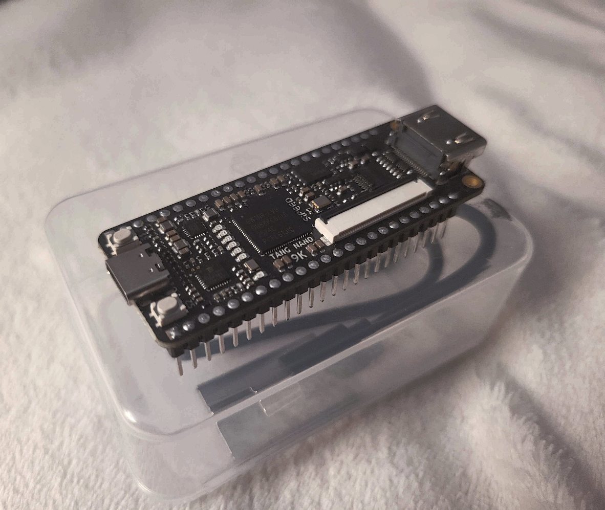
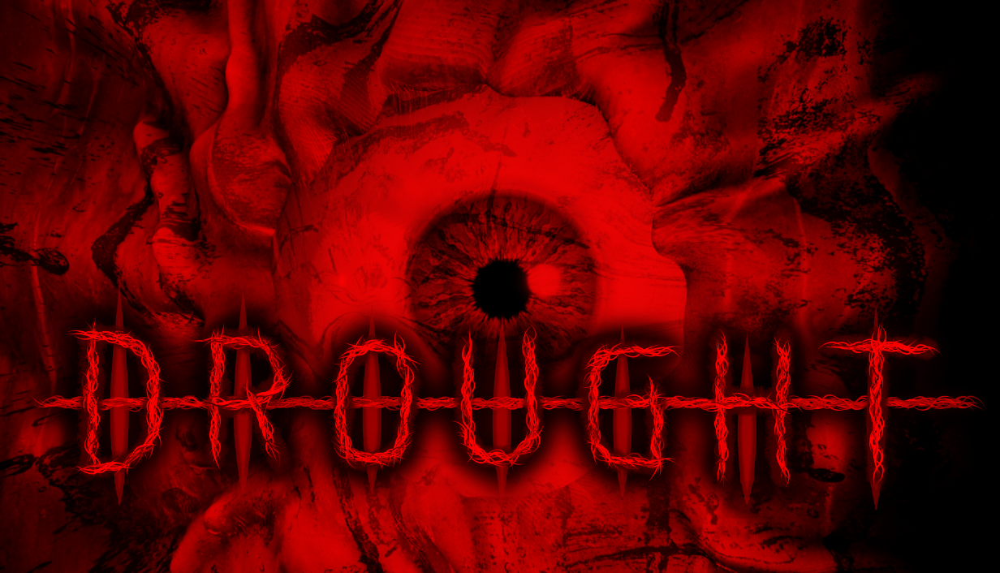
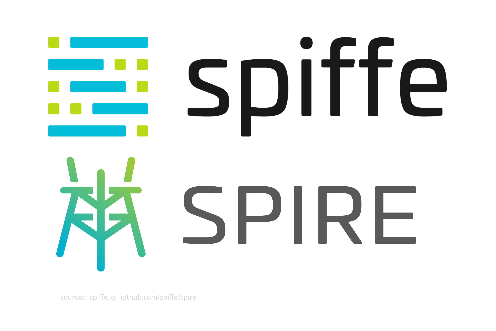
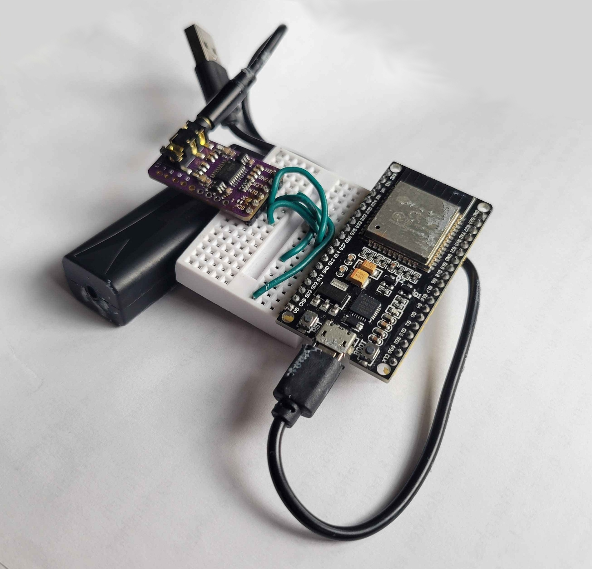

Projects

Custom 8-bit processor
While still in its infancy, this project will hopefully end up as a fully functional 8-bit processor. The final goal is to make my own instruction set and (with a microcontroller for IO), have a functional computer, and possibly a small operating system.
This project is currently being developed with Verilog and a SiPEED Tang Nano 9k FPGA (pictured above); this may eventually be changed if better hardware is required.
As of right now, this project is in its very beginning phases, as I am still actively learning Verilog and how to interface with an FPGA properly. The repository below will be updated as I progress
Click this card to view the project's repository

DROUGHT - A retro-inspired videogame
Initially started in the summer of 2025, DROUGHT was my primary passion project when I was not preoccupied with school and work.
I had initially planned for DROUGHT to be a short, first-person horror game with little story; however, it began to morph into something with a greater narrative focus and would begin to push my skills as a game programmer.
Through my development of DROUGHT, I learned how to interact with Steamworks for listing my game on a public marketplace. More importantly, I learned how to properly plan out my projects, in a broad sense, and also in the small-scale programming sense.
DROUGHT remains currently unreleased, but having overcome a long mental block, I hope to release this passion project of mine to the world near the start of 2028.
Click this card to view a collection of images and videos taken during the development of DROUGHT.

SPIFFE/SPIRE research
My research into SPIFFE / SPIRE was due to a wonderful opportunity I was given by my professor. I initially had very little knowledge about networking and security at the time.
Throughout my research, I learned the basics of network security, the "bottom turtle" problem in system security, and how the SPIFFE standard attempts to solve it.
Participating in this research taught me how to effectively manage my time when doing heavy research, how to navigate and understand technical documentation pages, and gave me experience working in the technical fields.
Click this card to view my final write-up document for my research into SPIFEF/SPIRE

Bluetooth audio receiver
After a long history of annoyances with the fragility of the 3.5mm cable standard, I had decided to implement a Bluetooth audio receiver in my car to listen to music. The car was manufactured in 2013, so it only had an AUX port and a CD player for audio input.
Initially, I had just used an ESP32-WROOM I had as the receiver; this solution lasted for about a year. Signal noise and lack of higher floating-point precision on the microcontroller's built-in DAC eventually forced me to make some upgrades.
The current setup of the audio receiver still has the ESP32-WROOM to receive the Bluetooth signal, but now a PCM5102A is used to convert the digital signal to an analog signal, and a ground loop noise isolator is used to remove the noise from ground caused by the ESP32-WROOM's operations.
This project marked the point where I began to implement what I had learned in my college classes for real-world purposes, as well as teaching me how to research solutions to technical problems in my projects.